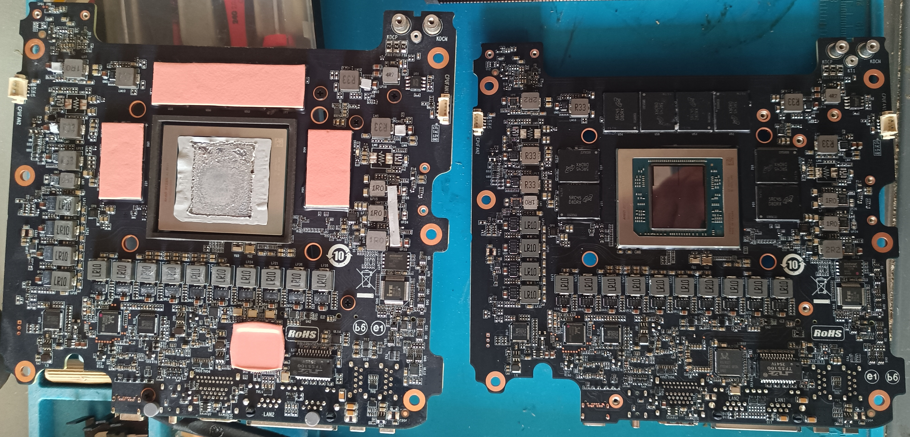
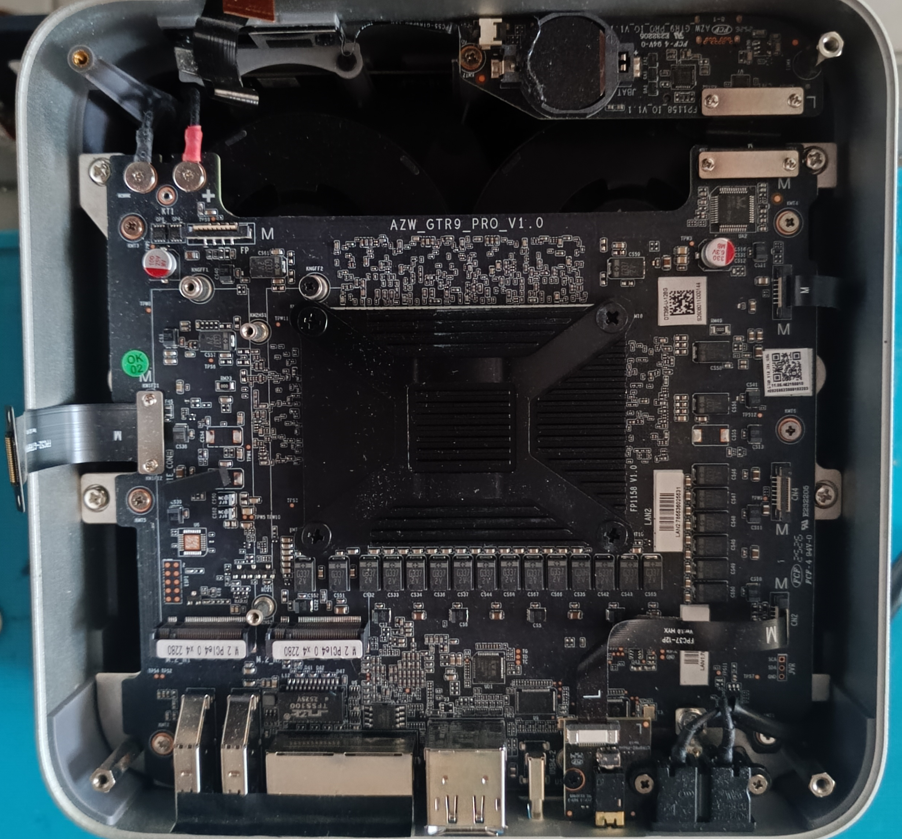
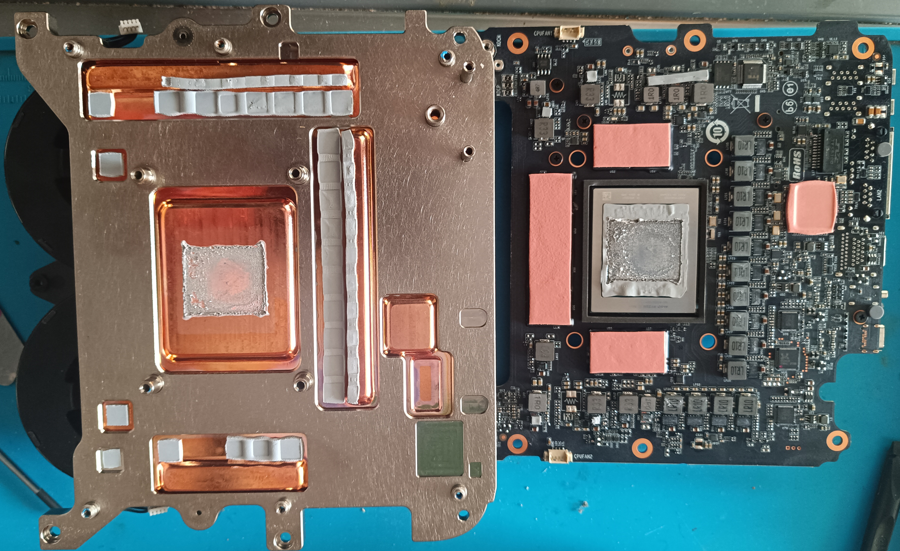
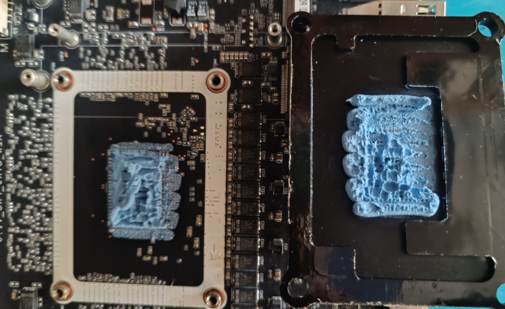
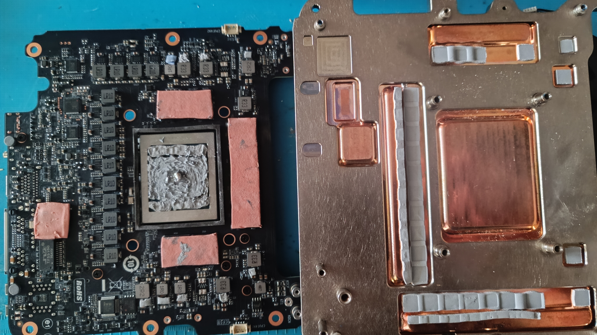
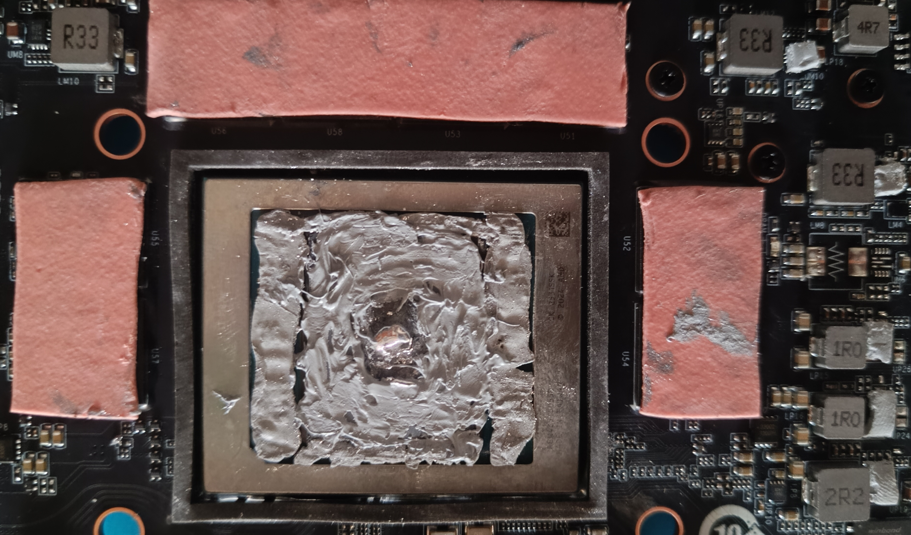
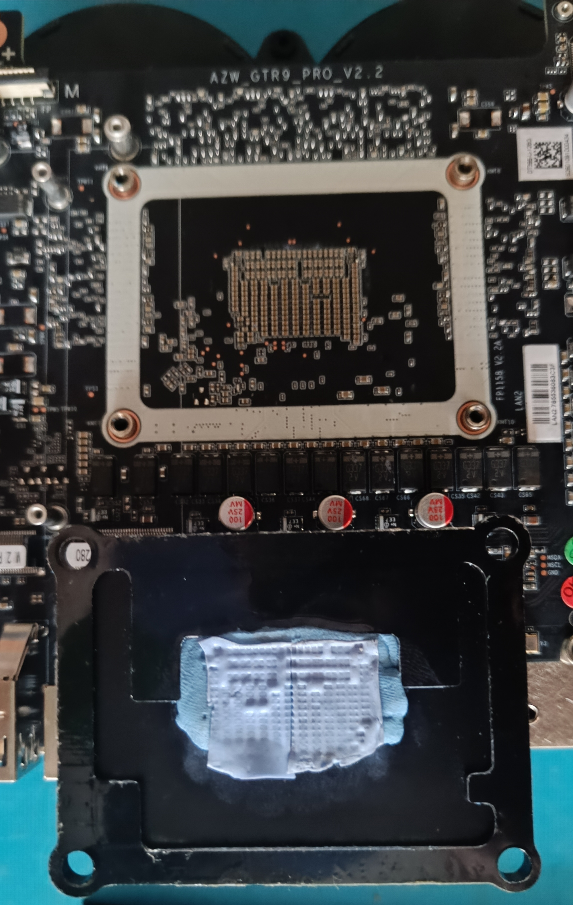

🔧 GTR9 Pro v2.2 Board Replacement 🆕 Journal
Replacing v1.0 board with v2.2 due to defective Intel NIC
📖 Project Overview
This journal documents my 4-hour journey replacing the GTR9 Pro board from v1.0 to v2.2. The swap was necessary due to the defective Intel E610 10Gbps Ethernet NIC on the v1.0 board, which is replaced by a reliable Realtek 10Gbps Ethernet NIC on the v2.2 board.
1 Motivation for Upgrade
The GTR9 Pro v2.2 board replaces the defective Intel E610 10Gbps Ethernet NIC with a reliable Realtek 10Gbps Ethernet NIC. This upgrade was necessary to ensure stable network connectivity.
2 Time Investment
Total time spent: Approximately 4 hours including preparation, disassembly, assembly, and testing.
🛠️ Preparation
3 Tools Required
Before starting the replacement, I gathered all necessary tools:
- Phillips head screwdrivers (various sizes)
- Plastic prying tools
- Small containers for screws
- Good lighting and workspace
4 New v2.2 Board
Here's the new v2.2 board that will replace the original v1.0 board:
🔨 Demontage V1.0
5 Opening the Case
First, carefully removing the back cover to access the internal components:
6 Removing the Old Board - Front View
Carefully disconnecting cables and removing the v1.0 board:
7 Removing the Old Board - Back View
Documenting the back of the v1.0 board before complete removal:
⚙️ Assembly V2.2
8 Installing the New Board - Front View
Installing the v2.2 board in the device housing:
9 Detailed Front Installation
Careful alignment and connection of components:
10 Back Installation
Securing the back connections of the v2.2 board:
🔍 V1.0 vs V2.2 Comparison
11 Side-by-Side Comparison
Direct comparison showing the differences between the two boards:
The v2.2 board features improved components and layout compared to the original v1.0 board.
🎉 Results & Conclusion
12 Completed Installation
After 4 hours of careful work, the v2.2 board is successfully installed:
The replacement was successful! The GTR9 Pro now runs with the v2.2 board, featuring the reliable Realtek 10Gbps Ethernet NIC instead of the defective Intel E610 NIC.
Changes:
- Realtek 10Gbps Ethernet NIC replaces defective Intel E610
- Different component layout on v2.2 board
Discover our tools and games:
New Spaceship - Retro Mini Game
Retro Arcade 2d side-scroller bullet-hell shmup game
🏠 Website:

Featured on itch.io

Featured on IndieDB

🚀 Sorana - The Visual AI Workspace:
Sorana is an AI-powered visual workspace that transforms how you organize and interact with digital files. Using semantic AI analysis, it automatically groups related files and folders onto a spatial 2D canvas, replacing traditional hierarchies with intuitive visual layouts. Build drag-and-drop workspaces and no-code agent pipelines, connect to on-prem or cloud AI backends (OpenAI, Mistral, LLamacpp, Lemonade, Ollama), and keep your data under your control.
🏠 Website:
🔥 Featured on Softpedia:

🔥 Featured on Microsoft Store:

Aicono - AI Intelligent Desktop Icon Autopilot
Aicono automatically organizes your cluttered Windows desktop using AI. Group icons intelligently, arrange them neatly!
🏠 Website:
RyzenZPilot - AMD Ryzen Power Management Tool
RyzenZPilot is a powerful tool for managing AMD Ryzen processor power settings on Windows. It allows users to adjust CPU performance, power limits, and thermal configurations for optimal performance and efficiency.